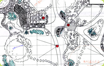
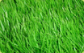
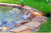
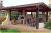

- Консультирование
- Ландшафтное проектирование
- Устройство газонов
- Устройство рокариев и альпинариев
- Устройство цветников
- Устройство водоёмов
- Озеленение территории
- Стройтельные работы
- Праздничное оформление территории
- Уход за территорией
Не секрет, что орехи являются концентрированным источником
необходимых для организма витаминов и минеральных веществ - о
пользе орехов уже давно никто не спорит. Так и студия ландшафтного
дизайна «OPEX» не только живые, красивые идеи
преображения, но ещё и полезные решения. Ведь приусадебный участок
должен быть не только живописным, ярким и индивидуальным, но и
полезным в прямом смысле этого слова. Здесь речь идёт о
микроклимате участка, об арома- и хромотерапии, о плодовых
культурах, о функциональности участка в любое время года. Мы
подходим к созданию сада не только с той задачей, как он будет
выглядеть в итоге, главное – как человек будет себя в нём
чувствовать.
С уважением, Попова Ольга.